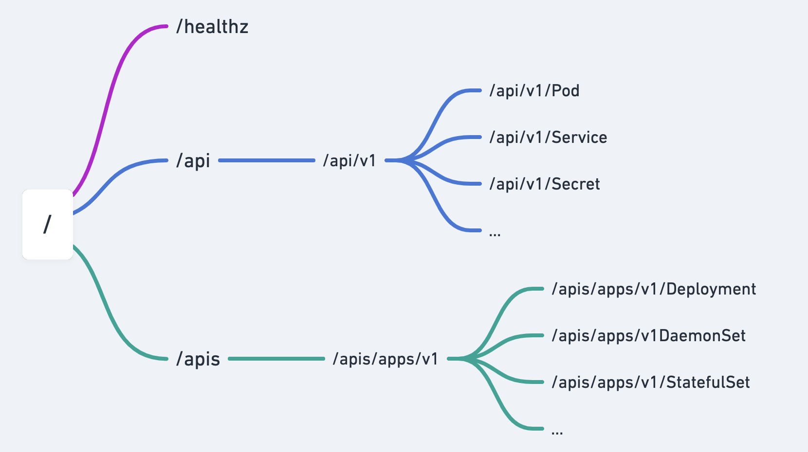

K8S API

API 对象由：Group（API 组）、Version（API 版本）和 Resource（API 资源类型）三个部分组成的
/apis/${Group}/${Version}/namespace/${Namespace}/${Resource}/minio
kubectl get --raw /apis/apps/v1/namespaces/default/deployments/minio
Group: apps
Version: v1
Resource: deployments
查看指定API
kubectl get --raw /
kubectl get --raw /apis/apps/v1 | python -m json.tool
kubectl get --raw /api/v1 | python -m json.tool
GVR 和 GVK 区别
Resouece: HTTP Restful API 请求路径中的资源
/apis/apps/v1/namespaces/default/deployments/minio
Group: apps
Version: v1
Resource: deployments
Kind: 系统中真正的实体
apiVersion: apps/v1
kind: Deployment
metadata:
name: minio
namespace: default
Group: apps
Version: v1
Kind: Deployment